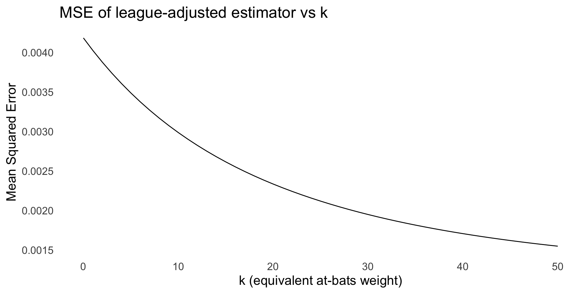
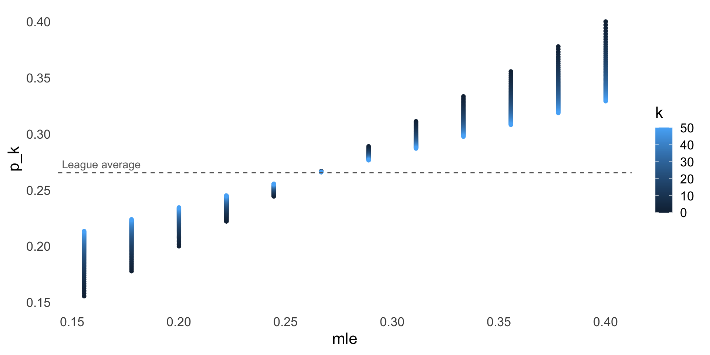

.jpg){kind=link}
| name | team | league | hits | at_bats | early_avg | final_avg |
|---|---|---|---|---|---|---|
| Roberto Clemente | Pitts | NL | 18 | 45 | 0.400 | 0.346 |
| Frank Robinson | Balt | AL | 17 | 45 | 0.378 | 0.298 |
| Frank Howard | Wash | AL | 16 | 45 | 0.356 | 0.276 |
| Jay Johnstone | Cal | AL | 15 | 45 | 0.333 | 0.222 |
| Ken Berry | Chi | AL | 14 | 45 | 0.311 | 0.273 |
| Jim Spencer | Cal | AL | 14 | 45 | 0.311 | 0.270 |
Lecture 06: Prediction models in genetics
PUBH 8878, Statistical Genetics
Inference vs Prediction
- So far, we have talked about estimation of certain quantities of interest
- p: Allele frequencies
- \beta: Association effect sizes
- \pi: Ancestry proportions
Inference vs Prediction
- Some tasks, however, focus on predicting outcomes rather than estimating parameters.
- Disease risk classification (polygenic risk scores, case vs control)
- Absolute/lifetime risk and time-to-event predictions
- Drug response/toxicity prediction
Inference vs Prediction
While not mutually exclusive, these tasks require different approaches and metrics
- Association
- Goal: identify variants related to trait.
- Target: low FDR/valid inference, effect estimates with SEs.
- Tools: single‑variant tests, LMMs, fine‑mapping
- Prediction
- Goal: accurate out‑of‑sample trait/risk estimates.
- Target: minimize expected loss (MSE, log loss)
- Tools: penalized GLMs, BLUP/GBLUP, ensembles, NNs
Bait and Switch
Today we will be talking about baseball! (Briefly)

Prediction in baseball
- Task: predict a later‑season batting rate using the first 45 at‑bats for each player (following Efron–Morris)
Our data
Estimating batting averages
- If we assume that each player’s batting average comes from a binomial distribution, then the MLE is the sample proportion \hat{p_i} = h_i/n_i
- A different approach is to use a beta prior centered at the league average
- The prior is p_i \sim \mathrm{Beta}(\alpha, \beta) with \alpha = \bar p \kappa and \beta = (1 - \bar p)\kappa, where \bar p is the league average
league_avg <- mean(batting_averages$hits / batting_averages$at_bats)
k_grid <- tibble(k = seq(0, 50, by = 1))
batting_avg_long <- tidyr::crossing(batting_averages, k_grid) |>
mutate(alpha = league_avg * k,
beta = (1 - league_avg) * k,
p_k = (alpha + hits) / (alpha + beta + at_bats),
estimator = paste0("k=", k)
) Prediction performance
Shrinkage visualization
What are we doing here?
- Our beta-binomial model makes an assumption that players regress toward the league average
- More statistically, we are assuming that the true batting averages are drawn from a common prior distribution centered at the league average
Back to genetics
- The same principles apply when performing prediction in genetics
- Many problems involve a large number of genetic variants (p) and relatively small sample sizes (n)
- When p > n, linear regression is singular
- This means the design matrix does not have full rank, leading to non-unique solutions
- We solve this by imposing strong structure (assumptions) on effects
p >> n: structural assumptions we use
- Sparsity: most variant effects are 0 (lasso, debiased lasso for inference)
- Gaussian shrinkage: many small effects (ridge, BLUP/GBLUP, PRS-CS)
- Low-rank/latent structure: factors, PCs, random effects (LMMs)
- Smoothness/blocks: genomic locality/LD (fused/TV penalties, windowed methods)
- Hybrid/empirical Bayes: estimate prior from data + partial pooling
Examples of Shrinkage/Sparse Estimators
- Ridge regression
- Lasso regression
- Elastic net
- Bayesian linear regression with Gaussian priors
- BLUP/GBLUP in genetics
- DESeq2 (transcriptomics)
What is BLUP?
- BLUP = Best Linear Unbiased Prediction of random effects in a mixed model.
- Model: y = X\beta + Zu + \varepsilon, with u \sim \mathcal N(0, \sigma_g^2 K) and \varepsilon \sim \mathcal N(0, \sigma_e^2 I).
- u collect latent genetic effects, K encodes genetic similarity among individuals.
- BLUP shrinks predictions toward a common mean
- The ratio \sigma_g^2/\sigma_e^2 determines shrinkage strength
- As \sigma_g^2/\sigma_e^2 \to 0, predictions shrink to the mean
- Pedigree-based BLUP: use K = A, the expected relatedness matrix from pedigrees.
- Genomic BLUP: use K = G, the realized similarity matrix from marker data.
Relationship matrices A and G (how we build them)
- Pedigree A:
- A_{ij} = expected proportion of alleles identical‑by‑descent
- Requires accurate pedigrees.
- Genomic G (unified with ridge via standardized markers):
- Build a standardized marker matrix Z by centering each SNP by its allele frequency and scaling by its standard deviation.
- 0/1 SNPs (DArT): Z_{ij} = (X_{ij} - p_j)/\sqrt{p_j(1-p_j)}.
- 0/1/2 SNPs: Z_{ij} = (X_{ij} - 2p_j)/\sqrt{2p_j(1-p_j)}.
- Set G = ZZ^\top / m with m markers; then \operatorname{E}[\operatorname{diag}(G)] \approx 1.
- Fit ridge on the same Z with
standardize=FALSEso ridge and GBLUP are directly comparable.
- Build a standardized marker matrix Z by centering each SNP by its allele frequency and scaling by its standard deviation.
Ridge, Kernel Ridge, and GBLUP: Equivalence
- Setup: Z\in\mathbb R^{n\times p} (standardized), K=ZZ^\top/p (with p markers), \tilde y = y - \bar y\,\mathbf 1.
- Primal ridge: \hat\beta = (Z^\top Z + \lambda I)^{-1} Z^\top\tilde y, predict \hat y = \bar y\,\mathbf 1 + Z\hat\beta.
- Dual/kernel ridge: \hat\alpha = (K + \lambda_K I)^{-1}\tilde y, predict \hat y = \bar y\,\mathbf 1 + K\hat\alpha.
- Identity: (Z^\top Z + \lambda I)^{-1} Z^\top = Z^\top (ZZ^\top + \lambda I)^{-1} ⇒ \hat\beta = Z^\top\hat\alpha and Z\hat\beta = K\hat\alpha ⇒ same \hat y.
- Scaling: if K=ZZ^\top/p, use \lambda_K=\lambda/p to match primal.
- GBLUP: y=\mathbf 1\mu + g + \varepsilon, g\sim\mathcal N(0,\sigma_g^2 K), \varepsilon\sim\mathcal N(0,\sigma_e^2 I) ⇒ \hat y = \hat\mu\,\mathbf 1 + K\big(K + (\sigma_e^2/\sigma_g^2)I\big)^{-1}(y-\hat\mu\,\mathbf 1), i.e., kernel ridge on the same K with \lambda_K=\sigma_e^2/\sigma_g^2.
Prediction for crop yield
- Consider the problem of predicting grain yield for different wheat lines across multiple environments
- We are interested in modeling the genetic and environmental effects on yield
Dataset at a glance
- Lines: 599 historical wheat lines
- Environments: 4 mega-environments (columns in Y)
- Phenotype (Y): average grain yield (one column per environment)
- Markers (X): (0/1 after QC + imputation)
- Pedigree (A): 599×599 additive relationship from multi-generation pedigree
Breeding context: what are we predicting?
- A “line” = inbred or DH line to be advanced or discarded; objective is to predict its genetic value (GEBV) for yield.
- “Environment (Env)” = location–year–management combination; yield varies by Env and by G×E (line×environment interaction)
- Target Population of Environments (TPE): we want models that generalize to the environments we care about
Cross‑validation that matches breeding decisions
- Use line‑wise folds so the same line never appears in both train and test.
- For multi‑environment data:
- Goal “new line, known environments” \to mask whole lines across all environments in test.
- Goal “known lines, new environment” \to environment‑wise holdouts and G×E models.
Loading data
Looking at our data
wPt.0538 wPt.8463 wPt.6348
[1,] 0 1 1
[2,] 1 1 1
[3,] 1 1 1 1 2 4 5
775 1.6716295 -1.7274699 -1.8902848 0.0509159
2166 -0.2527028 0.4095224 0.3093855 -1.7387588
2167 0.3418151 -0.6486263 -0.7995592 -1.0535691 775 2166 2167
775 1.9698 0.5742 0.5742
2166 0.5742 1.9930 1.9930
2167 0.5742 1.9930 1.9966Standardizing markers
- 1
- Calculate allele frequencies per marker
- 2
- Calculate standard deviations for each marker
- 3
- Standardize markers into Z
- 4
- Build genomic relationship matrix G = ZZ^\top / m
- 5
- Normalize A and G
Cross-validation folds
- Create a function to generate cross-validation folds
- If we have multiple observations for the same line, ensure they are in the same fold
Metrics functions
metrics <- function(obs, pred) {
accuracy <- suppressWarnings(cor(obs, pred))
rmse <- sqrt(mean((obs - pred)^2))
c(Accuracy = accuracy, RMSE = rmse)
}
by_fold_metrics <- function(y, pred, fold, model_label){
idx <- split(seq_along(y), fold)
acc <- sapply(idx, function(ii) suppressWarnings(cor(y[ii], pred[ii])))
rmse <- sapply(idx, function(ii) sqrt(mean((y[ii] - pred[ii])^2)))
tibble(Model = model_label, Fold = seq_along(idx), Accuracy = acc, RMSE = rmse)
}- Create functions to compute metrics
Ridge regression
cv_ridge_Z <- function(y, Z, fold, inner_nfolds = 5){
K <- max(fold)
pred <- rep(NA_real_, length(y))
lambda <- numeric(K)
for(k in seq_len(K)){
tr <- fold != k; te <- !tr
fit <- cv.glmnet(Z[tr, , drop = FALSE], y[tr],
alpha = 0, standardize = FALSE, intercept = TRUE,
nfolds = inner_nfolds)
pred[te] <- as.numeric(predict(fit, newx = Z[te, , drop = FALSE], s = "lambda.min"))
lambda[k] <- fit$lambda.min
}
list(pred = pred, lambda = lambda)
}- Create a function for ridge regression using
cv.glmnet - Uses
Z, the standardized marker matrix
A/G-BLUP Models
cv_bglr_kernel <- function(y, K, fold, nIter = 6000, burnIn = 1000){
pred <- rep(NA_real_, length(y))
for(k in seq_len(max(fold))){
ytr <- y; ytr[fold == k] <- NA
fit <- BGLR(y = ytr, ETA = list(list(K = K, model = "RKHS")),
nIter = nIter, burnIn = burnIn, verbose = FALSE)
pred[fold == k] <- fit$yHat[fold == k]
}
list(pred = pred)
}- Use
BGLRfor kernel ridge regression with a given kernel matrix - The
"RKHS"option directs BGLR to fit a kernel ridge model with covariance \sigma_g^2 K, so shrinkage follows the supplied similarity matrix
A+G-BLUP Models
cv_bglr_AplusG <- function(y, A, G, fold, nIter = 6000, burnIn = 1000){
pred <- rep(NA_real_, length(y))
for(k in seq_len(max(fold))){
ytr <- y; ytr[fold == k] <- NA
fit <- BGLR(y = ytr,
ETA = list(list(K = A, model = "RKHS"),
list(K = G, model = "RKHS")),
nIter = nIter, burnIn = burnIn, verbose = FALSE)
pred[fold == k] <- fit$yHat[fold == k]
}
list(pred = pred)
}- Combine pedigree and genomic relationship matrices in a two-kernel model
- This allows modeling both additive genetic effects from pedigree and genomic information
# A tibble: 4 × 5
Model avg_acc sd_acc avg_rmse sd_rmse
<chr> <dbl> <dbl> <dbl> <dbl>
1 A+G (two-kernel) 0.546 0.0336 0.845 0.0358
2 A-BLUP (A) 0.439 0.0391 0.903 0.0503
3 GBLUP (G) 0.535 0.0543 0.854 0.0402
4 Ridge(Z) 0.533 0.0539 0.854 0.0412